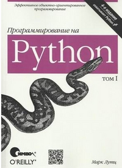

Поделиться
Программирование на Python. Том 1
- Автор(ы): Марк Лутц
- Издательство Символ-Плюс
- Жанры Программирование
- Тэги Python
- Год публикации 2019г.
- isbn 978-5-93286-210-0
Краткое содержание
С помощью этой практической книги вы получите всестороннее и глубокое введение в основы языка Python. Будучи основанным на популярном учебном курсе Марка Лутца, обновленное 5-е издание книги поможет вам быстро научиться писать эффективный
высококачественный код на Python. Она является идеальным способом начать изучение Python, будь вы новичок в программировании или профессиональный разработчик программного обеспечения на других языках.
Это простое и понятное учебное пособие, укомплектованное контрольными вопросами, упражнениями и полезными иллюстрациями, позволит вам освоить основы линеек Python 3.X и 2.X. Вы также ознакомитесь с расширенными возможностями языка,
получившими широкое распространение в коде Python.
Благодаря книге вы:
Исследуете основные встроенные типы объектов Python, такие как числа, списки и словари
Научитесь создавать и обрабатывать объекты с помощью операторов Python и освоите общую синтаксическую модель Python
Сможете применять функции для устранения избыточности кода и упаковки кода с целью многократного использования
Узнаете, как организовывать операторы, функции и прочие инструменты в более крупные компоненты посредством модулей
Погрузитесь глубже в классы - инструмент объектно-ориентированного программирования Python для структурирования кода
Научитесь писать крупные программы с применением модели обработки исключений и инструментов разработки Python
Освоите более сложные инструменты Python, включая декораторы, дескрипторы, метаклассы и обработку Unicode
"Книга Learning Python находится в начале моего списка рекомендованной литературы для любого, кто желает научиться программировать на Python."
Дуг Хеллманн
старший инженер-программист, Racemi, Inc.
Об авторе
Марк Лутц является мировым лидером в обучении языку Python, автором самых ранних и ставших бестселлерами книг по Python, а также первопроходцем в сообществе Python, начиная с 1992 года.
Обладая более чем 30-летним опытом разработки, Марк был автором книг Programming Python, 4th Edition и Python Pocket Reference, 4th Edition издательства O'Reilly.